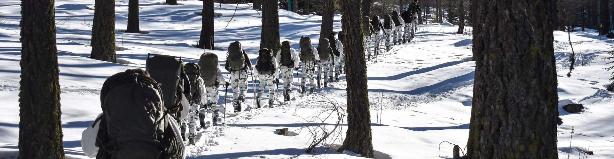

Mon expérience militaire
À 18 ans, en septembre 2019, j’ai pris la décision de m’engager dans l’armée afin de défendre mon pays et d’acquérir discipline et valeurs. J’ai choisi d’intégrer les chasseurs alpins et ai rejoint le 4ᵉ régiment de chasseurs à Gap (05000).
Formation et endurance Ma formation initiale a duré trois mois et a constitué un véritable choc physique et mental. L’adaptation a été difficile, mais j’ai su faire preuve de résilience, de rigueur et d’esprit d’équipe pour surmonter les épreuves. Sur 44 engagés au départ, seuls 27 ont terminé cette phase d’instruction.
J’ai ensuite suivi le Brevet de Skieur Militaire (BSM), un stage intensif d’un mois en conditions extrêmes, où j’ai développé des compétences essentielles :
- Autonomie et prise de décision dans un environnement hostile (missions en pleine montagne, bivouacs en igloo). - Endurance physique et mentale, avec des ascensions en ski de randonnée et des sorties de plusieurs jours en autonomie totale. - Gestion du stress et adaptation rapide, indispensables face aux conditions météorologiques et aux imprévus. - À l’issue du stage, notre effectif a encore diminué, passant de 44 initials à seulement 16 soldats qualifiés. - Obtenir le grade de soldat de montagne a été une immense fierté pour moi et ma famille.
Expériences opérationnelles et missions Au cours de mes cinq années de service, j’ai participé à plusieurs opérations, notamment :
- Deux missions Sentinelle (3 mois à Paris et 2 mois à Marseille), où j’ai assuré la sécurité des citoyens et la surveillance de zones sensibles. - Un déploiement prévu en Côte d’Ivoire en 2021, annulé au dernier moment à cause d’un test positif au Covid-19.
Grâce à ces expériences, j’ai acquis des compétences clés :
- Gestion de la sécurité et surveillance en milieu urbain et en opération extérieure. - Travail sous pression, en restant concentré et efficace dans des situations exigeantes. - Esprit d’équipe et communication, indispensables pour mener à bien des missions collectives.
Reconnaissance et distinctions
Mon engagement m’a valu la décoration de deux médailles :
- Une médaille pour mon engagement en mission Sentinelle, récompensant plus de 90 jours de service sur le terrain. - Une médaille pour mon travail remarquable en exercice opérationnel, soulignant mon implication et ma rigueur.
Transition vers l’informatique
Après cinq ans dans l’armée, j’ai pris la décision de ne pas renouveler mon contrat. Fort de l’expérience acquise, je souhaitais explorer de nouveaux horizons et me consacrer à un domaine intellectuel : l’informatique et l’analyse de données.
Mon passage dans l’armée m’a permis de développer une discipline rigoureuse, une forte capacité d’adaptation et un esprit analytique, des qualités précieuses pour évoluer dans des environnements techniques exigeants. Aujourd’hui, je mets cette même détermination et cette soif d’apprentissage au service de ma reconversion vers la tech.